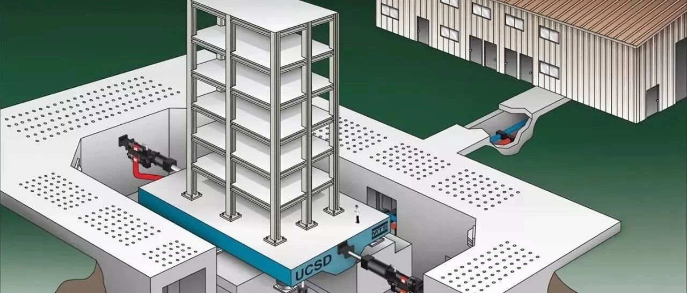

美国NSF投资1630万美元升级世界最大户外振动台
World's largest outdoor shake table receives $16.3 million from NSF for upgrades
UNIVERSITY OF CALIFORNIA - SAN DIEGO
世界上最大的户外振动台从NSF获得1630万美元用于升级
加利福尼亚大学圣地亚哥分校
原载：https://www.eurekalert.org/pub_releases/2018-10/uoc--wlo101618.php
郑哲 译

图一：2016年，一名研究生在检查一个即将进行振动台试验的六层钢结构建筑物。
世界上最大的室外地震模拟器由加利福尼亚大学圣地亚哥分校的结构工程师们运维。NSF（美国国家科学基金）提供了1630万美元的经费，用于升级该地震模拟器以扩展其试验能力。
这些资金能满足地震模拟器（通常称为振动台）设施升级的要求，以使其能更逼真地重现强烈地震期间的地面运动。升级后，该振动台能对世界上最重的试样进行测试，包括：多层建筑、桥梁墩和风力涡轮机，并能模拟地震期间可能发生的各种地面运动。
到目前为止，该振动台只能在一个方向上来回移动。 升级后，该振动台能在所有方向上移动（译者注：六个自由度方向上的运动）。
NSF升级基金的首席研究员加州大学圣地亚哥分校结构工程系的Joel Conte教授说到： “我们将能使用世界上精度最高的振动台来重现地震运动。”
能够重现完整的地震运动非常重要，因为在地震中，地面不仅仅是在水平振动的。例如，在1994年洛杉矶地区的北岭地震期间，桥梁墩柱击穿了桥面。此破坏形式暗示了地震期间地面有过强烈的垂直运动。同样，在1971年圣费尔南多地震期间，建筑物发生了扭曲和摇摆，暗示了地震期间地面可能发生了转动。
Conte解释说，自2004年振动台正式运行以来，在其上进行过30多次结构和岩土工程的试验。如果工程师在振动台升级后重新进行这些试验，他们会发现不同程度的破坏和不同的破坏模式。
Conte说：“这次升级将对地震工程产生巨大影响，它将加速发现一些重要的知识。工程师们在建造新结构（建筑物，桥梁，发电厂，水坝，堤坝，电信塔，风力涡轮机，挡土墙，隧道等）和改造旧结构中需要这些知识。这将提高我们社区的韧性。”
第一个在升级后振动台上进行试验的结构将是一个由交错层压木材制成的全尺寸10层建筑。 由科罗拉多矿业学院教授Shiling Pei领导的这些试验的目标是收集关键的基础数据，以设计高达20层的木结构建筑，这些建筑在大地震中不会受到严重破坏。也就是说，居住者不仅可以不受伤害地离开建筑物，而且他们也可以在地震发生后不久返回并恢复正常生活。
如今，在越来越多的大城市中，如洛杉矶、旧金山和西雅图，人们都希望加固旧的混凝土建筑以保证其震后安全。这将需要对加固体系进行大规模测试，这些测试只能在加州大学圣地亚哥分校升级后的振动台上进行。该振动台还将能够测试大型工业系统，例如医院的供暖和空调装置，以及公用事业公司和电网的大型电力变压器。
目前NSF Natural Hazards Engineering Research Infrastructure（NHERI）计划为加州大学圣地亚哥分校振动台的运行和维护提供为期五年资助。（注：NHERI计划参见此前文章 美国基金委4千万美元多灾害试验研究中心竞争结果公布）
振动台对社会的影响
在过去的14年里，位于加州大学圣地亚哥分校Englekirk结构工程中心的振动台的研究已经引起了商业和住宅结构设计规范的重大变化，并促成了人们提出关于岩土系统（如基础、隧道和挡土墙）抗震性能的新见解。它还帮助验证了新技术使用的合理性，使建筑物更有可能抵御地震。
例如，在旧金山大约有6,000个存在薄弱层的木结构建筑正在进行改造，以使其在强烈地震中更安全。这些“薄弱层”木结构建筑改造系统的全面试验将在加州大学圣地亚哥分校振动台上进行，这些试验由科罗拉多州立大学的John van de Lindt教授领导，这些试验对于实现旧建筑改造这一目标至关重要。
NSF升级基金的联合首席研究员加州大学圣地亚哥分校的Jose Restrepo教授与亚利桑那大学的Robert Fleischman教授进行了一项研究。该研究为楼板连接制定了新的设计标准——将地震力从建筑地板转移到柱子、墙并最终传递到基础。
振动台升级
振动台最初设计于2001年2月，以重现地震中地面运动的所有方向。但由于预算限制，建成后它仅具有一个水平运动方向的能力。2009年加州大学圣地亚哥分校的Jacobs工程学院从能源部获得了200万美元，用于添加垂直方向的作动器，以使振动台能够上下移动。但是直到现在他们还没有足够的液压动力，来再现垂直地面运动。
NSF资助将建立必要的电力基础设施，并为该设施的液压动力系统增加新的液压泵，冷却塔和非常大的蓄能器组。同时NSF将提供资金满足如下开销：重新配置现有两个水平执行器的费用；增加另外两个水平驱动器的费用；为六个垂直致动器供电以使其能在三个平动方向以及三个旋转方向运动的费用。
NSF升级基金的联合首席研究员加州大学圣地亚哥分校教授Lelli Van Den Einde说：
“升级的振动台设施还将提供前所未有的卓越工具，可用于研究生、本科生和K-12学生教育工作，同时也可为新闻媒体、决策者、基础设施所有者、保险提供者和公众提供科普工作。以便他们了解自然灾害和国家的需要，促使他们研发有效的技术、制定有效的政策，以防止这些事件成为社会灾难。”
振动台设施将于2020年2月至2021年7月关闭并进行升级。
致谢
获取本项NSF资助的准备工作得益于Jacobs工程学院院长Al Pisano；申请书主管Karen Arnett；研究副校长办公室成员；研究申请书服务处处长Sharon Franks；执行副校长Elizabeth Simmons；资本项目管理项目经理Rick Lyons以及加州大学圣地亚哥分校采购办公室的建筑商品经理Gary Oshima的大力支持。

郑哲
相关研究
长按识别二维码，关注我们的科研动态